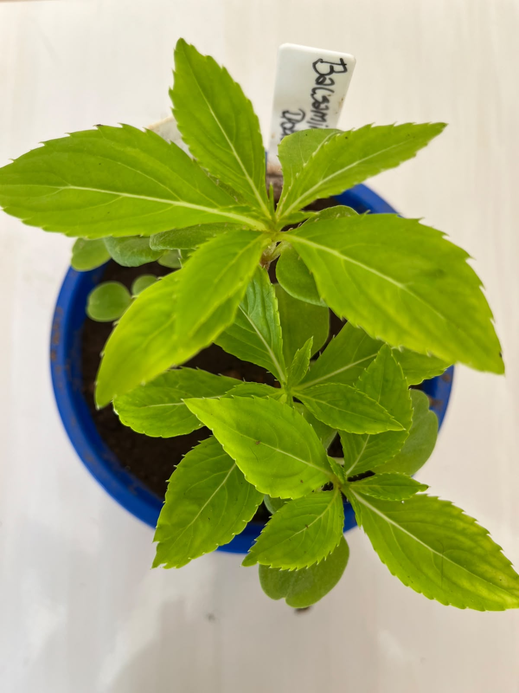

Jardim da Biodiversidade

Nome científico: Impatiens balsamina
Família botânica: Balsaminaceae
Origem: Ásia
Vaso na Horta Escolar Viva: 🔵 Azul Claro
A Balsâmica Dobrada é uma planta ornamental conhecida por suas flores cheias de pétalas, delicadas e coloridas. Sua aparência exuberante deixa os jardins mais alegres e atrativos.
É uma planta bastante apreciada em espaços educativos por apresentar grande diversidade de cores e por facilitar a observação da beleza e da variedade das plantas.
A Balsâmica Dobrada é uma planta que gosta de ambientes iluminados e pode ser cultivada em vasos ou jardins, trazendo muitas cores para o espaço escolar.
Suas flores podem atrair pequenos visitantes do jardim, contribuindo para a presença de polinizadores e para a diversidade do ambiente escolar.
Na Horta Escolar Viva, a Balsâmica Dobrada representa a importância das diferentes formas e cores presentes na natureza.
A Balsâmica é conhecida popularmente como "beijo" em algumas regiões, devido ao formato de suas sementes, que podem se espalhar quando amadurecem.